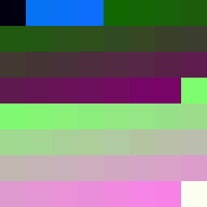
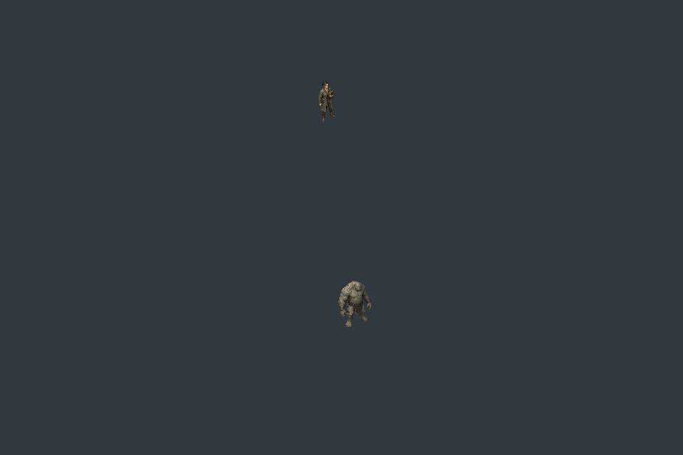

Godot shipping target; Pixi harness. The offscreen depth/order/clear/orientation capability passes. Maximum tested encoding error: 1.56 micrometres over 32 metres. The two-build integrated consumer cap is reached; the working chamber remains E07C.
Build 1 emitted an invalid decrement token at a negative bound. Build 2 exposes a reserved GLSL identifier. The resulting image below is failed evidence: the new chamber and pilot shaders did not initialize. No lighting, source-ray or art PASS is claimed.
Report · Capability evidence · First failed build · Second failed build · Prepared one-line correction


Next: E07F, one separately recorded compiler-gated repair build under the continuing-campaign authorization. The earlier budget question is withdrawn; no unanswered response is considered approval.